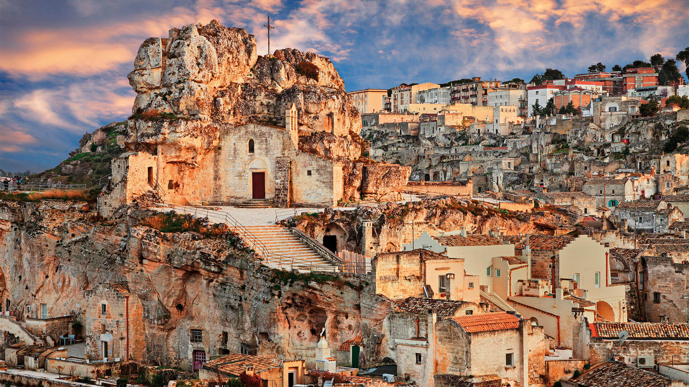

БАРИ - ИТАЛИЯ
"Senatus Populusque Romanus"

- Забележителности:
- Туристически забележителности близо до града
- Матера
- Арбелобело
Матера е построена върху стръмите скали, което придава на града неповторим и първобитен вид. От само началото на своята история, Матера е служила като природно убежище и място за защита. Векове насам, хората са изграждали своите жилища в скалите, които сега са известни като "Саси" (Sassi).
Селището на Саси е разделено на две части - Саси ди Сан Бьовенифачио и Саси ди Матера. Тези скални къщи, издълбани директно в скалите, представляват впечатляващ пример за традиционната обитаема скала. Домовете, мнозина от които са преобразувани в хотели, ресторанти и музеи, предлагат на посетителите възможност да преживеят аутентичната атмосфера на миналото.
Освен скалните селища, Матера разполага и с други впечатляващи забележителности. В сърцето на града се намира катедралата на Матера, посветена на Свети Мария. Тя е изградена през 13 век и представлява съчетание от различни архитектурни стилове. Вътрешността на катедралата е украсена със стъклени прозорци, фрески и религиозни скулптури.
Друга забележителност в Матера е Палацо Лангобардо, една от най-големите палати в града. Това е грандиозна сграда със стълбища, дворове и изящни архитектурни детайли.
.jpg)